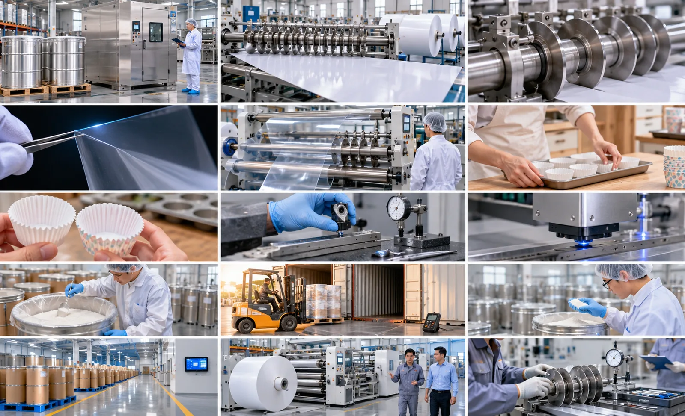
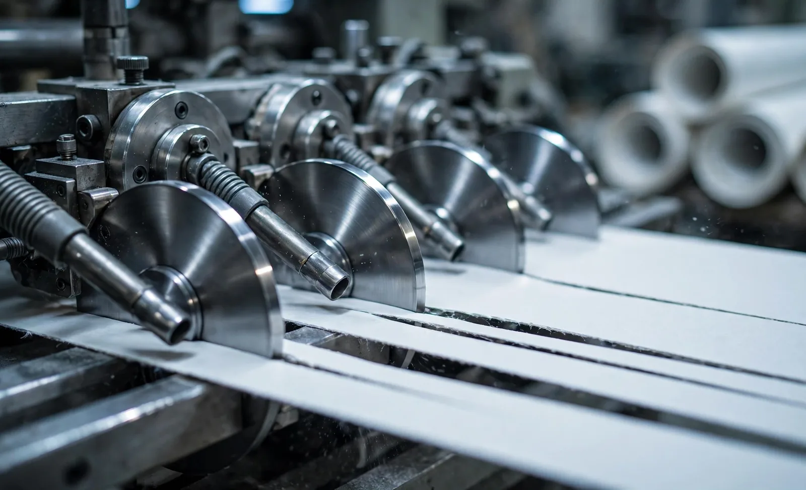

Published November 26, 2026 | By HDPTH Technical Editorial Team

Thermal paper looks like ordinary paper on the outside and behaves like a precision product on the inside. Every jumbo roll — for receipt rolls, label liner stock, ATM terminals or medical recorders — carries a heat-sensitive coating of dye, developer and protective pigment that develops an image under exactly the kind of localized pressure and friction a badly set converting line produces. A machine tuned for kraft or offset stock can destroy thermal value in a single shift: edges that shed black dust into printers, rolls wound so tight they block, web paths that scar the coated face. The slitter rewinder is therefore not a commodity purchase but the point where the coating is either protected or progressively damaged. This guide walks through the four areas where a thermal specification differs — cutting, tension and winding, dust and edge quality, acceptance testing — and shows which clauses make each enforceable.
What makes thermal paper different on a slitter rewinder
Three properties of the coating drive almost every machine decision. First, the coating is thermally and mechanically sensitive: friction against a guide roller, a poorly balanced knife, or even aggressive nip pressure can develop grey marks or scuffing that only becomes visible when the end customer prints. Second, the coating is friable — it breaks into fine particles at the cut edge rather than shearing away cleanly like fibrous uncoated paper — which turns every slit into a dust generation point and every roller into a potential dust collection surface. Third, the coated web has curl memory: moisture gradients between the two sides, combined with winding stress, pull finished rolls toward a curl that printers and dispensers handle badly. None of these appears in a standard machine data sheet, which is why buyers must translate them into requirements.
The jumbo format adds a second layer of demands. Thermal jumbo rolls are wide, heavy and high-value per metre: a damaged roll is not merely scrapped material, it is coating quality that cannot be re-inspected after slitting. Unwind stands must handle large diameters and heavy core loads without braking shocks, the web path must keep every contact surface clean, and the machine must hold width tolerance across the full width of the parent roll. A buyer who specifies the machine around the jumbo’s weight and width, and the coating’s sensitivity, has covered the two axes on which general-purpose machines most often disappoint.
Cutting method: shear, crush or razor on a coated web
The cutting method is the most consequential choice, because it determines edge quality and dust load simultaneously. Shear slitting — two precision-ground circular knives in a scissor action with controlled clearance and overlap — is the default for production thermal converting: the cut is clean and squared, the coating is parted rather than crushed, and dust generation is the lowest of the three methods. The demands are specific: knife holders with stable, repeatable settings, blade materials and edge preparations that resist wear on the slightly abrasive mineral content of the coating, and knife positioning that can be verified, not guessed. The practical specification is a stated edge-quality standard plus a knife system whose settings are instrumented and documented.
Crush slitting presses a blunt blade through the web against a hardened anvil roll. It is inexpensive and tolerant of setup error, but on thermal paper it compresses the coated edge, generates a black dust halo and leaves an edge that keeps shedding inside dispensers and printers — acceptable only for coarse, low-value work, and then as a deliberate, documented choice. Razor slitting cuts cleanly at very narrow widths where shear knives cannot physically be spaced, but on thermal paper the blade runs in continuous contact with the coating: edge life shortens, and a tired razor burnishes the coating before it visibly fails. Treat razor as a special-case tool for narrow products, with a defined blade-change interval, not as the line’s general cutting method.
Tension zones and winding: from jumbo to sellable roll
Thermal web tension is a narrower game than uncoated paper: the coated side creases under less stress, and the web transmits every tension mistake into the finished coil as blocking, telescoping or core crush. The unwind zone needs smooth, controlled braking sized for the full jumbo diameter range, because a heavy roll stopped abruptly or started with a jerk stretches the outer laps and hands a tension disturbance to the slitting section. Between unwind and knives, the web should cross as few rollers as possible, and every one of them should run true: a single misaligned or eccentric idler prints its error into the wound roll as a hardness variation the customer feels at the printer.
On the rewind side, finished thermal rolls are almost universally center-wound with a taper tension profile — highest at the core, decaying toward the outside diameter — so the inner laps stay tight and the outer laps are not over-stressed. Where one setup winds many lane widths, differential rewind shafts let each lane slip independently and finish at the same hardness; where widths are uniform, controlled center winding with nip pressure may be simpler and equally good. The specification item that matters is not the brand of shaft but the result: a stated roll hardness window, measured across the diameter range on the buyer’s own material. A supplier who can promise that window has understood the product; one who offers only a generic tension curve has not yet been asked the right question.
Dust, curl and edge quality: the three defect families to control
Dust is the defect family buyers underestimate until the first customer complaint. The coating sheds at every cut point, and without designed extraction the particles lodge on idler rollers, transfer to the coated face on its next wrap, and finish as dark specks under the print head. A thermal-capable machine treats dust as an engineered load — vacuum extraction at each slitting station, containment around the knife zone, contact surfaces that are enclosed or continuously cleaned. The enforceable form of the requirement is a measurement: an agreed dust-test method at the cut edge, with a threshold the machine must meet at production speed.
Curl and edge quality follow. Curl in finished thermal rolls comes from moisture asymmetry across the web combined with winding stress; a machine cannot fix a gradient that arrived in the jumbo, but it can avoid adding to it — even web tension across the width, nip pressure that does not drag the web sideways, and winding profiles that leave the coil in equilibrium rather than under permanent bending stress. Edge quality is the final visible signature of the whole setup: the cut face should be squared and free of burrs, nicks and dust halo, because the edge feeds first through every printer and dispenser the roll ever meets. Buyers should define all three — a dust threshold, a curl measurement after defined conditioning, and an edge-quality reference standard — and photograph the agreed reference samples into the acceptance protocol so “good edge” is a picture, not an opinion.

Writing the specification and the acceptance test
The requirement specification should begin with the material, not the machine: jumbo width and diameter range, basis weights, core types, the narrowest and widest finished slit, target line speed, and the downstream application of every product family. Around that envelope, the buyer states the four quality parameters from this guide as numbers — an edge-quality standard, a dust threshold, a finished-roll hardness window and a curl limit after defined conditioning — plus the operational items generic quotations leave vague: splicing success rate at production speed, roll length metering accuracy and changeover time between slit patterns. Each is measurable, and each has a natural home in the acceptance test.
The factory acceptance test should then run the buyer’s own jumbo rolls — or an agreed substitute paper — through a defined production sequence, and every specification number should reappear as a measured value: edge quality photographed against the reference, dust measured by the agreed method, hardness profiles at core, mid and outer diameter, curl after the agreed conditioning time, splice success over a defined number of consecutive events, and metering accuracy logged across the run. A supplier confident in a thermal specification welcomes this protocol, because it turns the buyer’s anxieties into a checklist the machine either passes or does not — and settles every dispute before shipment rather than after installation.
Two adjacent guides extend this material-first approach to a broader envelope: the Paper Slitter Rewinder Specification: Buyer’s Guide covers the general paper-machine clauses that thermal converting inherits, and the Slitter Rewinder Curl Defects: Buyer’s Guide goes deeper into the curl mechanisms and remedies summarised above. To see how unwind, shear slitting and center winding are configured together in a production machine, review the HDPTH high-speed slitting machines.
Planning to Convert Thermal Paper Jumbo Rolls?
Send HDPTH your jumbo roll dimensions, basis weights, slit widths and downstream products. Our application engineers will review cutting method, tension and winding against your coating, and put edge quality, dust, hardness and curl into a FAT protocol you can enforce before shipment.
Submit Your Project InquiryFrequently asked questions
Can a standard paper slitter rewinder run thermal paper jumbo rolls?
Sometimes, but rarely well. A general-purpose machine can slit thermal paper at moderate speeds, yet the coating changes several requirements at once: cutting must not generate friction heat that darkens the edge, coating dust must be extracted rather than wiped back onto the web, contact surfaces must stay clean so they do not mark the coated side, and the tension window is narrower because the coated web creases and curls more readily than uncoated stock. Converters running thermal jumbo rolls as a core product should specify the machine for the coating, not assume the coating will tolerate a general-purpose build.
Which cutting method is best for thermal paper: shear, crush or razor?
For production converting, shear slitting with precision-ground circular knives is the default: a clean, squared edge with the least coating disturbance and the least dust. Crush slitting is simple and cheap but presses a blunt blade through the coating, generating fine black dust and a compressed edge that sheds in printers and dispensers. Razor slitting cuts cleanly at very narrow widths but the blade runs hot against the coating and wears fast, so reserve it for widths where shear knives cannot be spaced.
Why does dust matter so much when slitting thermal paper?
The thermal coating is a friable layer of dye, developer and pigment, and every slitting event breaks particles loose from the cut edge. Without dedicated extraction the dust accumulates on rollers, guides and finished roll faces, causing dark specks in printing, adhesive contamination in label converting and customer complaints at the roll level. A thermal-specification machine treats dust as a designed-for load: vacuum extraction at every cut point, cleaned contact surfaces, and a measurable threshold verified during acceptance testing.
What winding tension profile suits finished thermal paper rolls?
Finished thermal rolls must be wound firm enough to store and transport without telescoping, but not so tight that the coil stresses the coating or blocks. The standard approach is center winding with a taper tension profile — highest tension at the core, decaying toward the outer diameter — with nip control for even web stress. The profile depends on basis weight, core size and target hardness, so require the supplier to demonstrate the hardness window on your own material rather than accept a generic curve.
What should the FAT include for a thermal paper slitter rewinder?
Run the buyer’s own jumbo rolls, or an agreed substitute, through a defined production sequence and measure what decides profitability: slit edge quality against an agreed standard, dust at the cut points by an agreed method, roll hardness profiles across the diameter range, curl after defined conditioning, roll length metering accuracy, and splice success at production speed. Every figure from the offer — speed, width range, dust thresholds — should appear as a measured value in the FAT protocol, with re-test rules agreed before shipment.